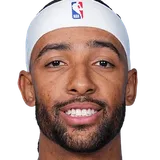

His teams won one title, with the 2022-23 Denver Nuggets. In his 772 games for 2 teams over 12 seasons they went 403–369 (52.2%), +34 games over .500, with an average final finish of 14.1. The biggest one-season rise in his career: the Orlando Magic went from #26 in 2017-18 to #14 in 2018-19.
Jump to: Record by opponent · Season by season · Teammate help
Compare Aaron Gordon with…
Suggested, same era and similar teammate help:


Final NBA finish, season by season
Title Finals Other playoffs Missed playoffs. #1 = champion; the dashed line is last place that season. Each point opens that season's final standings.
All 30 teams ranked in 2022-23, his best finish (#1)Teammate help
 Nikola Jokic57.06 seasons
Nikola Jokic57.06 seasons Jamal Murray3.01 season
Jamal Murray3.01 season Nikola Vucevic1.01 season
Nikola Vucevic1.01 season
Career
Career records (W–L, W − L, with and without) include 2026-27 games through Nov. 24, 2026; season counts and finishes are through 2025-26. Each card opens its board in the same scope. How we count.

Latest completed seasons
2026-27 so far
Games through Nov. 24, 2026, the last game in the nightly data. These games are already in his career records above (W–L, win %, W − L, with and without, all marked "incl. 2026-27"). Season counts, final finishes and teammate help use completed seasons through 2025-26; 2026-27 joins them when the season ends.
| Team | His games | With him | Without him | Gap | On/off per 100 | Started / bench | Close games |
|---|---|---|---|---|---|---|---|
| 16 | 10–6 62.5% | N/A | N/A | +9.3 | 10–6 / N/A | 6–1 |
Season by season
Newest first; every header sorts. Final NBA finish is the team's rank among all teams that season (#1 = champion) and opens that season's standings. "Without him" uses the team-season window; the span line counts only the games between his first and last game for the team. The 2026-27 (to date) row counts games through Nov. 24, 2026; its final finish and playoffs are in progress.
| 2026-27 (to date) | In progress | 10–6 62.5% | In progress | 16 of 16 | 10–6 62.5% | N/A | N/A | |
| 2025-26 | #10 of 30 | 54–28 65.9% | Lost 1st round 2–4 | 36 of 82 | 27–9 75.0% | 27–19 58.7%span: 25–19, gap +18.2 | +16.3 | |
| 2024-25 | #7 of 30 | 50–32 61.0% | Lost conf semis 3–4 | 51 of 82 | 33–18 64.7% | 17–14 54.8%span: 17–14, gap +9.9 | +9.9 | |
| 2023-24 | #5 of 30 | 57–25 69.5% | Lost conf semis 3–4 | 73 of 82 | 49–24 67.1% | 8–1 88.9%span: 8–1, gap −21.8 | −21.8 | |
| 2022-23 | #1 of 30 | 53–29 64.6% | Title 4–1 | 68 of 82 | 45–23 66.2% | 8–6 57.1%span: 7–6, gap +12.3 | +9.0 | |
| 2021-22 | #10 of 30 | 48–34 58.5% | Lost 1st round 1–4 | 75 of 82 | 46–29 61.3% | 2–5 28.6%span: 2–4, gap +28.0 | +32.8 | |
| 2020-21 | #28 of 30 | 21–51 29.2% | Missed playoffs | 25 of 72 | 10–15 40.0% | 5–15 25.0%span: 5–14, gap +13.7 | +15.0 | |
| 2020-21 | #8 of 30 | 47–25 65.3% | Lost conf semis 0–4 | 25 of 72 | 19–6 76.0% | 2–1 66.7%span: 1–1, gap +26.0 | +9.3 | |
| 2019-20 | #16 of 30 | 33–40 45.2% | Lost 1st round 1–4 | 62 of 73 | 30–32 48.4% | 3–8 27.3%span: 2–5, gap +19.8 | +21.1 | |
| 2018-19 | #14 of 30 | 42–40 51.2% | Lost 1st round 1–4 | 78 of 82 | 40–38 51.3% | 2–2 50.0%span: 2–2, gap +1.3 | +1.3 | |
| 2017-18 | #26 of 30 | 25–57 30.5% | Missed playoffs | 58 of 82 | 19–39 32.8% | 6–18 25.0%span: 6–18, gap +7.8 | +7.8 | |
| 2016-17 | #26 of 30 | 29–53 35.4% | Missed playoffs | 80 of 82 | 29–51 36.2% | 0–2 0.0%span: 0–2, gap +36.2 | +36.2 | |
| 2015-16 | #20 of 30 | 35–47 42.7% | Missed playoffs | 78 of 82 | 32–46 41.0% | 3–1 75.0%span: 3–1, gap −34.0 | −34.0 | |
| 2014-15 | #26 of 30 | 25–57 30.5% | Missed playoffs | 47 of 82 | 14–33 29.8% | 11–24 31.4%span: 11–24, gap −1.6 | −1.6 |
On/off, starts and close games
From the lineup data, 1996-97 on, incl. 2026-27 through Nov. 24, 2026. On/off is net points per 100 possessions with him on the floor minus off, a different unit from the win-rate gaps. Started and off the bench are team records in those games; close games are those within 5 points in the last 5 minutes with him on the floor.
| 2026-27 (to date) | +9.3 | 10–6 62.5% | N/A | 6–1 85.7% | |
| 2025-26 | +14.8 | 26–7 78.8% | 1–2 33.3% | 11–6 64.7% | |
| 2024-25 | +10.0 | 27–15 64.3% | 6–3 66.7% | 12–8 60.0% | |
| 2023-24 | +12.7 | 49–24 67.1% | N/A | 24–15 61.5% | |
| 2022-23 | +20.3 | 45–23 66.2% | N/A | 17–10 63.0% | |
| 2021-22 | +9.0 | 46–29 61.3% | N/A | 22–12 64.7% | |
| 2020-21 | +5.6 | 10–15 40.0% | N/A | 5–6 45.5% | |
| 2020-21 | +4.5 | 19–6 76.0% | N/A | 7–2 77.8% | |
| 2019-20 | −1.6 | 30–32 48.4% | N/A | 13–15 46.4% | |
| 2018-19 | +4.4 | 40–38 51.3% | N/A | 23–21 52.3% | |
| 2017-18 | +5.1 | 19–38 33.3% | 0–1 0.0% | 9–18 33.3% | |
| 2016-17 | +9.0 | 26–46 36.1% | 3–5 37.5% | 14–16 46.7% | |
| 2015-16 | +0.3 | 13–24 35.1% | 19–22 46.3% | 9–18 33.3% | |
| 2014-15 | −3.0 | 0–8 0.0% | 14–25 35.9% | 7–9 43.8% |
Teammate help by season
Help this season = Teammates Score points for honors won that season by teammates who shared a game with him, with every teammate that adds to it. Only honors won in that same season count. How help works.
- 2026-27
 DenverHelp this season: pending (honors are awarded after the season)
DenverHelp this season: pending (honors are awarded after the season) - 2025-26Denver
Nikola Jokic All-NBA 1stAll-Star526 gJamal Murray All-NBA 3rdAll-Star333 g
Help this season: 8 = 5 Nikola Jokic + 3 Jamal Murray
Other teammates (no honors that season): Tim Hardaway Jr 36 g, Bruce Brown 36 g, Spencer Jones 27 g, Christian Braun 26 g, Peyton Watson 25 g, Cameron Johnson 25 g, Jonas Valanciunas 23 g, Julian Strawther 23 g, Jalen Pickett 22 g, Zeke Nnaji 20 g, DaRon Holmes 11 g, Hunter Tyson 8 g, Tyus Jones 6 g, David Roddy 3 g and 2 more
- 2024-25Denver
Nikola Jokic All-NBA 1stAll-Star547 g
Help this season: 5 = 5 Nikola Jokic
Other teammates (no honors that season): Christian Braun 49 g, Michael Porter 48 g, Russell Westbrook 46 g, Peyton Watson 42 g, Julian Strawther 40 g, Jamal Murray 39 g, DeAndre Jordan 33 g, Zeke Nnaji 33 g, Jalen Pickett 31 g, Hunter Tyson 27 g, PJ Hall 14 g, Spencer Jones 13 g, Trey Alexander 13 g, Vlatko Cancar 6 g and 1 more
- 2023-24Denver
Nikola Jokic MVPAll-NBA 1stAll-Star1171 g
Help this season: 11 = 11 Nikola Jokic
Other teammates (no honors that season): Reggie Jackson 73 g, Christian Braun 73 g, Peyton Watson 72 g, Michael Porter 72 g, Kentavious Caldwell-Pope 67 g, Jamal Murray 54 g, Zeke Nnaji 51 g, Justin Holiday 49 g, Julian Strawther 41 g, DeAndre Jordan 29 g, Collin Gillespie 21 g, Jalen Pickett 20 g, Jay Huff 15 g, Braxton Key 15 g and 1 more
- 2022-23Denver
Nikola Jokic Finals MVPAll-NBA 2ndAll-Star1461 g
Help this season: 14 = 14 Nikola Jokic
Other teammates (no honors that season): Bruce Brown 67 g, Kentavious Caldwell-Pope 65 g, Christian Braun 62 g, Jamal Murray 60 g, Michael Porter 50 g, Vlatko Cancar 46 g, Jeff Green 45 g, Zeke Nnaji 44 g, Bones Hyland 37 g, Ishmael Smith 33 g, DeAndre Jordan 30 g, Davon Reed 29 g, Peyton Watson 15 g, Reggie Jackson 12 g and 2 more
- 2021-22Denver
Nikola Jokic MVPAll-NBA 1stAll-Star1169 g
 Bones Hyland All-Rookie 2nd0.12562 g
Bones Hyland All-Rookie 2nd0.12562 g
Help this season: 11.125 = 11 Nikola Jokic + 0.125 Bones Hyland
Other teammates (no honors that season): Monte Morris 70 g, Jeff Green 68 g, Will Barton 65 g, JaMychal Green 60 g, Austin Rivers 60 g, Facundo Campazzo 60 g, Davon Reed 42 g, Zeke Nnaji 36 g, Bryn Forbes 31 g, DeMarcus Cousins 29 g, Markus Howard 29 g, PJ Dozier 18 g, Bol Bol 14 g, Petr Cornelie 13 g and 5 more
- 2020-21
 Orlando
Nikola Vucevic All-Star125 g
Orlando
Nikola Vucevic All-Star125 g
Help this season: 1 = 1 Nikola Vucevic
Other teammates (no honors that season): Khem Birch 25 g, Dwayne Bacon 25 g, Cole Anthony 19 g, Gary Clark 19 g, Terrence Ross 18 g, Evan Fournier 16 g, James Ennis 15 g, Michael Carter-Williams 11 g, Jordan Bone 11 g, Chuma Okeke 11 g, Mo Bamba 9 g, Markelle Fultz 8 g, Al-Farouq Aminu 6 g, Karim Mane 6 g and 1 more
- 2020-21Denver
Nikola Jokic MVPAll-NBA 1stAll-Star1125 g
Help this season: 11 = 11 Nikola Jokic
Other teammates (no honors that season): Facundo Campazzo 25 g, Michael Porter 24 g, JaMychal Green 23 g, Paul Millsap 21 g, PJ Dozier 20 g, Vlatko Cancar 15 g, Shaquille Harrison 15 g, Will Barton 14 g, Markus Howard 14 g, Austin Rivers 13 g, JaVale McGee 11 g, Zeke Nnaji 11 g, Bol Bol 11 g, Monte Morris 10 g and 2 more
- 2019-20OrlandoHelp this season: 0, no honored teammate
- 2018-19Orlando
Nikola Vucevic All-Star176 g
Help this season: 1 = 1 Nikola Vucevic
Other teammates (no honors that season): Evan Fournier 77 g, Terrence Ross 77 g, DJ Augustin 77 g, Jonathan Isaac 72 g, Wesley Iwundu 64 g, Jerian Grant 58 g, Khem Birch 49 g, Mo Bamba 43 g, Jarell Martin 38 g, Jonathon Simmons 37 g, Isaiah Briscoe 36 g, Michael Carter-Williams 12 g, Amile Jefferson 12 g, Melvin Frazier 9 g and 1 more
- 2017-18OrlandoHelp this season: 0, no honored teammate
- 2016-17OrlandoHelp this season: 0, no honored teammate
- 2015-16OrlandoHelp this season: 0, no honored teammate
- 2014-15Orlando
 Elfrid Payton All-Rookie 1st0.2547 g
Elfrid Payton All-Rookie 1st0.2547 g
Help this season: 0.25 = 0.25 Elfrid Payton
Other teammates (no honors that season): Nikola Vucevic 45 g, Channing Frye 40 g, Tobias Harris 39 g, Victor Oladipo 37 g, Dewayne Dedmon 35 g, Willie Green 33 g, Luke Ridnour 30 g, Evan Fournier 28 g, Moe Harkless 27 g, Andrew Nicholson 24 g, Ben Gordon 23 g, Kyle O'Quinn 22 g, Devyn Marble 8 g
Record against each opponent
- Best regular-season record against one franchise: 23–5 (82.1%) against the New Orleans Pelicans in 28 games.
- Toughest regular-season record against one franchise: 9–20 (31.0%) against the Oklahoma City Thunder in 29 games.
- Most playoff series against one franchise: 3 against the Minnesota Timberwolves, 1–2 in series and 8–7 in games.
Regular season, incl. 2026-27 through Nov. 24, 2026: 772 games, 403–369, against 30 franchises.
Grouped by franchise (named as today); game lists keep each team's name that season. Filters and the tab are kept in the URL, so a filtered view can be shared.
| Games list | |||||||
|---|---|---|---|---|---|---|---|
| 32 | 14–18 | 43.8% | −4 | 0–1 (1–4 in games) | 2014-15 to 2026-27 | ||
| 30 | 17–13 | 56.7% | +4 | 1–2 (8–7 in games) | 2014-15 to 2025-26 | ||
| 30 | 15–15 | 50.0% | 0 | N/A | 2014-15 to 2025-26 | ||
| 30 | 17–13 | 56.7% | +4 | 1–0 (4–2 in games) | 2014-15 to 2026-27 | ||
| 30 | 17–13 | 56.7% | +4 | N/A | 2014-15 to 2025-26 | ||
| 29 | 12–17 | 41.4% | −5 | N/A | 2014-15 to 2026-27 | ||
| 29 | 11–18 | 37.9% | −7 | N/A | 2014-15 to 2025-26 | ||
| 29 | 9–20 | 31.0% | −11 | 0–1 (3–4 in games) | 2014-15 to 2026-27 | ||
| 29 | 19–10 | 65.5% | +9 | N/A | 2014-15 to 2025-26 | ||
| 28 | 12–16 | 42.9% | −4 | N/A | 2014-15 to 2026-27 | ||
| 28 | 18–10 | 64.3% | +8 | N/A | 2014-15 to 2025-26 | ||
| 28 | 16–12 | 57.1% | +4 | N/A | 2014-15 to 2026-27 | ||
| 28 | 17–11 | 60.7% | +6 | 1–0 (4–1 in games) | 2014-15 to 2025-26 | ||
| 28 | 23–5 | 82.1% | +18 | N/A | 2014-15 to 2026-27 | ||
| 27 | 13–14 | 48.1% | −1 | 0–1 (1–4 in games) | 2015-16 to 2026-27 | ||
| 27 | 15–12 | 55.6% | +3 | 1–1 (4–6 in games) | 2014-15 to 2026-27 | ||
| 26 | 11–15 | 42.3% | −4 | N/A | 2014-15 to 2026-27 | ||
| 25 | 16–9 | 64.0% | +7 | N/A | 2014-15 to 2025-26 | ||
| 25 | 11–14 | 44.0% | −3 | 1–0 (4–3 in games) | 2015-16 to 2025-26 | ||
| 25 | 14–11 | 56.0% | +3 | 2–0 (8–1 in games) | 2014-15 to 2025-26 | ||
| 25 | 11–14 | 44.0% | −3 | N/A | 2015-16 to 2025-26 | ||
| 24 | 13–11 | 54.2% | +2 | N/A | 2015-16 to 2024-25 | ||
| 24 | 17–7 | 70.8% | +10 | N/A | 2014-15 to 2026-27 | ||
| 24 | 15–9 | 62.5% | +6 | N/A | 2014-15 to 2025-26 | ||
| 23 | 8–15 | 34.8% | −7 | N/A | 2014-15 to 2024-25 | ||
| 23 | 10–13 | 43.5% | −3 | N/A | 2014-15 to 2026-27 | ||
| 23 | 13–10 | 56.5% | +3 | N/A | 2014-15 to 2023-24 | ||
| 23 | 13–10 | 56.5% | +3 | N/A | 2014-15 to 2025-26 | ||
| 11 | 1–10 | 9.1% | −9 | N/A | 2014-15 to 2020-21 | ||
| 9 | 5–4 | 55.6% | +1 | N/A | 2020-21 to 2024-25 |
Rows add up to his career record in his games. A playoff series counts when he played in it; early round-robin games show as games only. How we count.
Playoffs, with and without him
| 2025-26 | Lost in the first round 2–4 to | #10 of 30 | 3 of 6 | 1–2 33.3% | 1–2 33.3% | 0.0 | |
| 2024-25 | Lost in the conference semifinals 3–4 to | #7 of 30 | 14 of 14 | 7–7 50.0% | N/A | N/A | |
| 2023-24 | Lost in the conference semifinals 3–4 to | #5 of 30 | 12 of 12 | 7–5 58.3% | N/A | N/A | |
| 2022-23 | Won the title 4–1 over | #1 of 30 | 20 of 20 | 16–4 80.0% | N/A | N/A | |
| 2021-22 | Lost in the first round 1–4 to | #10 of 30 | 5 of 5 | 1–4 20.0% | N/A | N/A | |
| 2020-21 | Lost in the conference semifinals 0–4 to | #8 of 30 | 10 of 10 | 4–6 40.0% | N/A | N/A | |
| 2018-19 | Lost in the first round 1–4 to | #14 of 30 | 5 of 5 | 1–4 20.0% | N/A | N/A |
Arrival and departure
Team wins per 82 games the season before he arrived vs his first season there, and his last season vs the season after he left. He leaves a team only when his next season with games is for another team (or he never plays again); whole seasons he missed and came back from are one "Missed" row with the team's record without him. Per 82 so short seasons compare fairly. These are team records, not a measure of what he did.
Seasons split between teams
Each team's record before his first game for it, inside his window (games with and without him) and after his last game, in the seasons he played for two or more teams.
Best duos
Team record in regular-season games both played, top 10 by win %, at least 50 games together, incl. 2026-27 through Nov. 24, 2026.
- Jalen Pickett 53–20 72.6%
 Bruce Brown
72–31 69.9%
Bruce Brown
72–31 69.9%- Jamal Murray
144–63 69.6%
 Julian Strawther
72–32 69.2%
Julian Strawther
72–32 69.2%
Zeke Nnaji 136–62 68.7% Kentavious Caldwell-Pope
90–42 68.2%
Kentavious Caldwell-Pope
90–42 68.2%- Nikola Jokic
214–101 67.9%
 Michael Porter
137–66 67.5%
Michael Porter
137–66 67.5% DeAndre Jordan
62–30 67.4%
DeAndre Jordan
62–30 67.4% Peyton Watson
103–51 66.9%
Peyton Watson
103–51 66.9%
With and without his teammates
His 12 teammates with the most regular-season games together. "Together" is the team's record in the games both played for it; "Without him" is the team's record in the games Aaron Gordon played for that team while the teammate was on it (between the teammate's first and last game for the team, the appearance span) and the teammate did not play. Fewer than 20 games without him: no gap. Games through Nov. 24, 2026. How we count.
- Nikola VucevicOrlando 2014-15 to 2020-21
- Together
- 155–224 40.9%
- Without him
- 18–30 37.5%
- Gap
- 3.4 points lower
 Evan FournierOrlando 2014-15 to 2020-21
Evan FournierOrlando 2014-15 to 2020-21- Together
- 151–214 41.4%
- Without him
- 19–30 38.8%
- Gap
- 2.6 points lower
- Nikola JokicDenver 2020-21 to 2026-27
- Together
- 214–101 67.9%
- Without him
- 15–14 51.7%
- Gap
- 16.2 points lower
 DJ AugustinOrlando 2016-17 to 2019-20
DJ AugustinOrlando 2016-17 to 2019-20- Together
- 111–140 44.2%
- Without him
- 7–20 25.9%
- Gap
- 18.3 points lower
- Elfrid PaytonOrlando 2014-15 to 2017-18
- Together
- 81–146 35.7%
- Without him
- 7–10 41.2%
- Gap
- Too few games without him
 Christian BraunDenver 2022-23 to 2026-27
Christian BraunDenver 2022-23 to 2026-27- Together
- 150–76 66.4%
- Without him
- 14–4 77.8%
- Gap
- Too few games without him
- Jamal MurrayDenver 2020-21; Denver 2022-23 to 2026-27
- Together
- 144–63 69.6%
- Without him
- 27–19 58.7%
- Gap
- 10.9 points lower
- Michael PorterDenver 2020-21 to 2024-25
- Together
- 137–66 67.5%
- Without him
- 14–9 60.9%
- Gap
- 6.6 points lower
 Terrence RossOrlando 2016-17 to 2020-21
Terrence RossOrlando 2016-17 to 2020-21- Together
- 94–107 46.8%
- Without him
- 13–33 28.3%
- Gap
- 18.5 points lower
- Zeke NnajiDenver 2020-21 to 2026-27
- Together
- 136–62 68.7%
- Without him
- 90–51 63.8%
- Gap
- 4.9 points lower
 Mario HezonjaOrlando 2015-16 to 2017-18
Mario HezonjaOrlando 2015-16 to 2017-18- Together
- 65–124 34.4%
- Without him
- 14–12 53.8%
- Gap
- 19.5 points higher
 Jeff GreenOrlando 2016-17; Denver 2021-22 to 2022-23
Jeff GreenOrlando 2016-17; Denver 2021-22 to 2022-23- Together
- 95–85 52.8%
- Without him
- 22–10 68.8%
- Gap
- 16.0 points higher